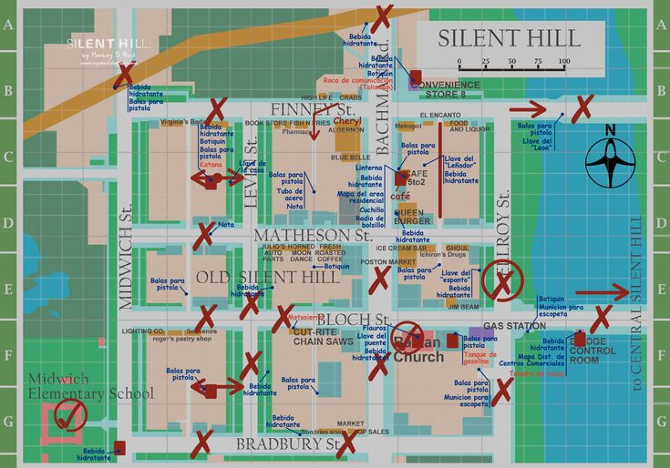
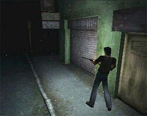
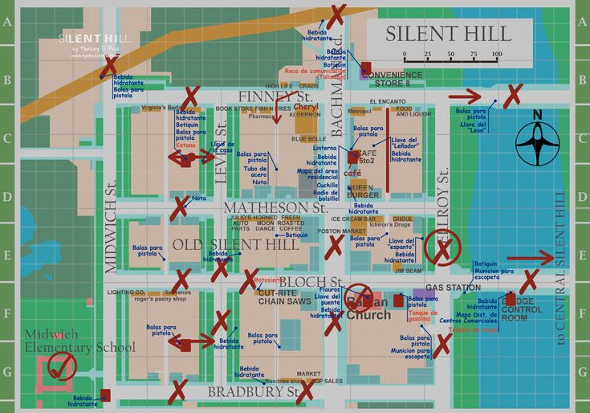
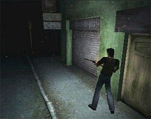

Silent Hill 1
El juego sigue a Harry Mason, un hombre que viaja con su hija adoptiva, Cheryl, a la pequeña ciudad de Silent Hill para pasar unas vacaciones. Durante el viaje, Harry se desvía del camino y sufre un accidente; al despertar, descubre que Cheryl ha desaparecido misteriosamente. Desesperado, comienza a explorar la ciudad en busca de su hija.
A medida que Harry avanza, se encuentra con un pueblo sumido en una niebla espesa y habitado por criaturas grotescas. También conoce a varios personajes ambiguos, como Cybil Bennett, una oficial de policía, y Dahlia Gillespie, una mujer vinculada a los extraños sucesos del lugar. Harry descubre que Cheryl es parte de un ritual de culto realizado por la secta de Silent Hill, quienes buscan invocar a un ser demoníaco llamado Samael a través de su sangre.
La ciudad parece reflejar los miedos y traumas internos de sus habitantes, alternando entre el mundo “real” y un mundo alternativo oscuro y distorsionado, donde la violencia y el terror son más intensos. Al final, según las decisiones del jugador, Harry puede rescatar a Cheryl y escapar de la ciudad, o fracasar, enfrentándose a diferentes finales que revelan la verdadera naturaleza de Silent Hill y el destino de los personajes.

 




Monstruos de Silent Hill 1
| Imagen | Monstruo | Descripción breve |
|---|---|---|
| Air Screamer | Criatura voladora similar a un pterodáctilo que ataca en picada. | |
| Night Flutter | Variante más fuerte del Air Screamer en el Otro Mundo. | |
| Groaner | Perros desollados que patrullan las calles de Silent Hill. | |
| Romper | Versión más rápida y agresiva del perro Groaner. | |
| Grey Child | Criaturas infantiles deformadas del colegio. | |
| Mumbler | Seres pequeños y peligrosos que atacan en grupo. | |
| Stalker | Pequeñas sombras que representan niños fantasma. | |
| Larval Stalker | Versión más débil y temblorosa del Stalker. | |
| Bloodsucker | Trampas invisibles de tentáculos que dañan al jugador. | |
| Creeper | Bichos tipo cucaracha gigantes que atacan en enjambres. | |
| Hanged Scratcher | Cucarachas más grandes y fuertes del Otro Mundo. | |
| Wormhead | Larva gigante que aparece como enemigo subterráneo. | |
| Puppet Nurse | Enfermeras controladas por el parásito Incubus. | |
| Puppet Doctor | Doctores manipulados por el parásito demoníaco. | |
| Split Head | Lagarto gigante del colegio. | |
| Parasite | Parásito que controla enemigos humanos. | |
| Cyborg Moth | Polilla gigante del parque de atracciones. | |
| Floatstinger | Polilla enorme que ataca en el Otro Mundo. | |
| God (Incubus) | Forma demoníaca final nacida del sufrimiento de Alessa. |
Silent Hill 2
El juego sigue a James Sunderland, quien recibe una carta de su esposa Mary, fallecida hace tres años, diciéndole que lo espera en su “lugar especial” en Silent Hill...
Al llegar, Silent Hill se revela como un lugar lleno de niebla, soledad y criaturas grotescas que parecen reflejar los miedos, culpas y traumas internos...
A medida que avanza, James descubre que Silent Hill no es solo un lugar físico, sino un espejo de su subconsciente...


Monstruos de Silent Hill 2
| Imagen | Monstruo | Descripción breve |
|---|---|---|
| Pyramid Head | Manifestación del castigo, culpa y represión de James. | |
| Lying Figure | Humanoides encerrados en un traje de piel; escupen ácido. | |
| Mannequin | Compuesto solo de piernas femeninas; simboliza deseo reprimido. | |
| Nurse | Enfermeras distorsionadas por la mente perturbada de James. | |
| Mary/Maria Boss | Última manifestación del conflicto emocional de James. | |
| Abstract Daddy | Representa el abuso sufrido por Angela; enemigo extremadamente simbólico. | |
| Flesh Lip | Cuerpos colgantes que representan abuso emocional y verbal. | |
| Mandarin | Criaturas bajo las rejillas, invisibles salvo por sus brazos largos. | |
| Bubble Head Nurse | Versión deformada de la obsesión de James con las enfermeras. | |
| Doorman | Ser atrapado entre dos puertas; simboliza opresión. | |
| Insane Patient | Figura tambaleante que parece un paciente mental fuera de control. | |
| Pyramid Heads (x2) | Enfrentamiento final de James con su culpa. |
Silent Hill 3
El juego sigue a Heather Mason, una adolescente que vive con su padre Harry...
Heather se adentra en una ciudad Silent Hill más oscura y distorsionada...
A lo largo del juego, Heather debe enfrentarse a su propio pasado y a la verdad sobre su origen...
Monstruos de Silent Hill 3
| Imagen | Monstruo | Descripción breve |
|---|---|---|
| Closer | Gigantes con brazos prensiles que representan opresión hacia Heather. | |
| Pendulum | Criatura flotante con cuchillas giratorias y chillidos. | |
| Slurper | Bestias rápidas que se arrastran para atacar por sorpresa. | |
| Numb Body | Larvas blandas que suenan hinchadas; simbolizan fragilidad. | |
| Double Head | Perros bífidos con carne expuesta del Otro Mundo. | |
| Scraper | Humanos del culto con cuchillas; simbolizan fanatismo agresivo. | |
| Nurse (SH3) | Más grotescas y agresivas que en SH2; trauma hospitalario de Heather. | |
| Hairless | Bestias sin pelo que atacan en espacios estrechos. | |
| Glow Worm | Orugas bioluminiscentes del parque de atracciones. | |
| Memory of Alessa | Doppelgänger de Heather; representa su conflicto interno. | |
| Split Worm | Gusano gigante que aparece tempranamente. | |
| Missionary | Asesino enviado por el culto para eliminar a Heather. | |
| Glutton | Enorme criatura invisible tras un sello mágico. | |
| Leonard Wolf | Padre de Claudia transformado en monstruo acuático. | |
| God (SH3) | La deidad incompleta del culto, nacida a través de Heather. |